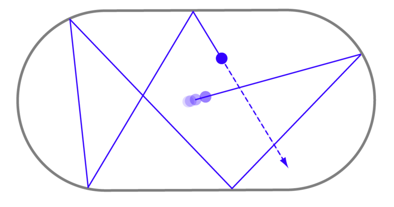
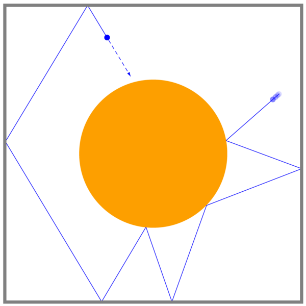
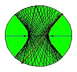

where $T(x_n,n)=x_n+F(x_n,n)$. In many cases the evolution rule of a system is described by giving the function $T:\Omega\times \mathbb{N}_0\to\Omega$ instead of $F:\Omega\times \mathbb{N}_0\to\Omega$; clearly these two descriptions are equivalent, but the latter has the advantage that it makes sense even when $\Omega$ is an abstract set with no extra structure (in which case there is no "differencing" operation, so it does not make sense to talk about a difference equation). In the case of the equation (30), usually it will be called a
recurrence relation
instead of a difference equation. An especially nice (and very common) situation is one in which $T$ does not depend on the time variable $n$, but instead is simply a function $T(x)$ of the state. In this case
(30)
becomes
and the function $T:\Omega\to\Omega$ is called the
evolution map, or just the
map, associated with the system; it tells the state of the system one unit of time into the future as a function of the present state. We shall be concerned exclusively with such time-independent systems.
Example2.1
Arithmetic growthThe equation for arithmetic growth is
where $b\in\mathbb{R}$ is a constant. As a difference equation, it will be written as
$$
\begin{align*}
x_{n+1}-x_n = b.
\end{align*}
$$
Its solution is the arithmetic sequence
$$
x_n = x_0 + bn.
$$
Example2.2
Geometric growthThe equation for geometric growth is
$$
\begin{align*}
x_{n+1} = r x_n ,
\end{align*}
$$
where $r\in\mathbb{R}$ is a constant, or $x_{n+1}-x_n = (r-1)x_n$ as a difference equation (so, like the ODE $\dot{x}(t)=cx(t)$, it is suitable to model situations in which the rate of change of a quantity is proportional to it). The solution is the geometric sequence
$$
x_n = x_0 r^n.
$$
Example2.3
Fibonacci numbersThe sequence of Fibonacci numbers $(F_n)_{n=1}^\infty$ is defined as the unique sequence that satisfies the initial conditions $F_1=F_2=1$ together with the recurrence relation
Note that this is a
second-order recurrence relation
--- the discrete-time analogue of a second order differential equation. In general, a second-order recurrence will have the form
i.e., each successive value in the sequence is computed as a function of the last two values (and possibly the time parameter). To solve the recurrence we will need to specify not one but two initial conditions, e.g. (if we are trying to solve the recurrence for $n\ge0$) $x_0$ and $x_1$.
It is well-known that the solution to the recurrence
(31)
is given by the amusing formula
This can be proved by induction by verifying the initial conditions and then substituting the expression on the right-hand side into (31).
Is there a systematic way to derive such mysterious formulas? As with ODEs, it is often more convenient to represent a second- (or higher-) order system as a first-order system. We can do this by constructing a new system whose state space is $\mathbb{R}^2$ instead of $\mathbb{R}$, where the recurrence relation is given by
which reproduces (31). Denoting the $2\times 2$ matrix on the right-hand side of
(33)
by $A$, the recurrence relation
(33)
can be thought of as "geometric growth with a matrix multiplier". By analogy with the geometric growth example, it is easy to see that its solution is
It is interesting to ask what happens if we start from some initial value $x_0$ and apply the map to get the subsequent values $x_1=T(x_0), x_2=T(x_1)=T(T(x_0)),$ etc. Let's look at some examples:
Is it true that for any initial number $x_0$, iterating the map will eventually reach the infinite cycle $4,2,1$? This famous question, known as the
Collatz problem, was proposed 75 years ago. Extensive research and numerical computations suggest that the answer is yes, but no one knows how to prove this.
Example2.6
Discretized forward evolution of an ODEIf $\dot{x}=F(x)$ is an autonomous ODE (say on $\mathbb{R}$ or some region of $\mathbb{R}^d$), we can discretize time by allowing it to flow only in integer multiples of some fixed time step $\tau$. That is, we consider the phase flow $(\varphi_t)_{t\ge 0}$ of the system, and for each initial condition $x_0$ define a sequence $(x_n)_{n=0}^\infty$ by
$$
x_n = \varphi_{n\tau}(x_0) \qquad (n\ge 1).
$$
Because the phase flow satisfies the equation $\varphi_{t+s}(x)=\varphi_t\circ \varphi_s(x)$, it is easy to see that $x_n$ satisfies the recurrence relation
$$
x_{n+1} = T(x_n),
$$
where $T = \varphi_\tau$. So, the ODE has given rise to a discrete-time dynamical system by fixing the time-step $\tau$.
Example2.7
Poincaré section map of an ODEThe time-discretization procedure described in the above example requires an arbitrary choice of a time unit. There is a more natural way to construct a discrete-time dynamical system starting from an ODE that avoids this difficulty, called the
Poincaré section map
or
first-return map. Assume the phase space $\Omega$ of the ODE is $n$-dimensional (i.e., a subset of $\mathbb{R}^n$, or more generally, an "$n$-dimensional manifold"). Furthermore, assume that there is an $(n-1)$-dimensional subset $A \subset \Omega$ that has the property that all solutions are known to pass infinitely many times through $A$ and through its complement $\Omega\setminus A$. The Poincaré map $T:A\to A$ is defined by
where $\tau(x) = \inf\{ t>0\,:\, \varphi_t(x)\in A\}$ and $\varphi_t:\Omega\to\Omega$ is the phase flow of the system.
Poincaré maps are an extremely useful tool in the analysis of ODEs. A nice illustration of this general construction and its applicability in a specific example is given on page 279 of Strogatz's book
Nonlinear Dynamics and Chaos.
Example2.8
Logistic mapAn important and fascinating example that we will spend a lot of time discussing is the
logistic map
$L:[0,1]\to[0,1]$, a dynamical system with state space $\Omega=[0,1]$. It is actually not one map, but a family of maps $L=L_r$ where $0\le r\le 4$ is a parameter. The map $L_r$ is defined by the formula
The logistic map was introduced as a simple model for the fluctuations in the population of a species of animals (or plants, or bacteria etc.) in an environment with limited resources. The idea is that $x$ represents the size of the population (as a fraction of some absolute maximum), and the assumptions are that for small values of $x$, the population will increase in a roughly geometric pattern, but for large values of $x$ the growth will taper off as the animals deplete the available food resources, leading to starvation and a dramatic reduction in population size for even larger values of $x$ (see Figure 8).
Figure 8: The logistic map $L_r$ for $r=2.5$.
The behavior of the logistic map, depending on the value of $r$, can be very simple, or very complicated (or somewhere in between) --- in fact, it is one of the simplest examples of a chaotic system, and studying it will give us valuable insights into the more general theory of discrete-time dynamical systems.
Example2.9
Billiard mapsAn interesting class of examples with a geometric flavor are the billiard maps. Given some odd-shaped bounded region $D$ in the plane, we let a billiard ball bounce around in $D$, reflecting off the walls without loss of energy. This is a continuous time system, but a standard simplification step is to take its Poincaré section map with respect to the set of times at which the ball hits the wall. Thus, the state space of a billiard system considered as a discrete-time system is the set of pairs $(x,\theta)$ where $x \in \partial D$ is a boundary point and $\theta\in [0,2\pi)$ is the angle of the ball's velocity immediately after it reflects off the wall at $x$.
Billiard systems exhibit an extremely rich behavior that is extensively studied by mathematicians and physicists as a toy model for more complicated systems such as the behavior of an ideal gas. Depending on the shape of the "billiard table," the system can have a chaotic structure or a more orderly behavior where nearby initial conditions do not drift far apart. See Figure 9 for some examples.

(a)

(b)(c)

(d)
Figure 9: Billiard dynamical systems: (a) The "Bunimovich stadium"; (b) The "Sinai billiard" (source: Wikipedia); (c) and (d) billiard in an ellipse-shaped region.
 (c)
(c)